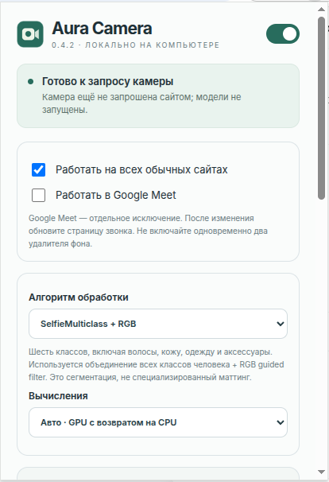
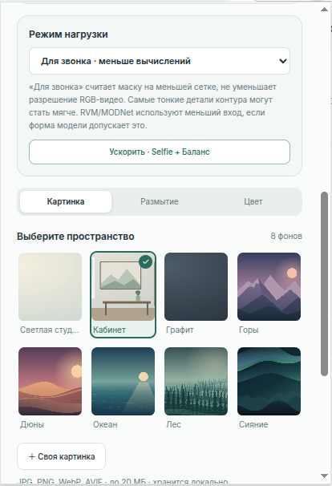
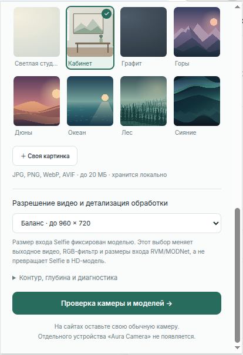

Aura Camera
Aura Camera — расширение для Chrome, которое заменяет фон веб-камеры на картинку, размывает его или заливает цветом во время видеозвонка. Обработка выполняется локально на вашем компьютере. Сайт звонка по-прежнему получает видео от обычной камеры: отдельное устройство «Aura Camera» выбирать не нужно.
Версия 0.4.2 — тестовая сборка. Расширение работает на страницах HTTP/HTTPS, включая Google Meet. Оно не меняет камеру в отдельных приложениях и на внутренних страницах Chrome. Совместимость с каждым сайтом и скорость обработки зависят от браузера и компьютера.
Как выглядит
| Настройки и выбор алгоритма | Фоны и режим нагрузки | Качество и проверка камеры |
|---|---|---|
 |
 |
 |
На скриншотах показаны примеры настроек; выбранный фон и переключатели могут отличаться от настроек новой установки.
Установка с нуля
Понадобятся настольный Chrome 119 или новее, Python 3.10 или новее и интернет для первой загрузки моделей. Node.js, pip и сборка WASM не нужны. Установка не требует sudo.
- Скачайте архив исходного кода через Code → Download ZIP на странице проекта и распакуйте его. Можно также выполнить
git clone https://github.com/lamooof/aura-camera.git. Дальнейшие команды запускайте в папке сprepare.pyи подпапкойextension. - Подготовьте две модели Selfie и необходимые библиотеки:
bash
python3 prepare.py
python3 prepare.py --check
На Windows, если команда python3 недоступна, используйте py -3 вместо python3. Скрипт скачает зависимости в папку расширения и проверит файлы. При ошибке сети повторите первую команду: уже загруженные файлы останутся в .cache.
3. Откройте chrome://extensions, включите Режим разработчика, нажмите Загрузить распакованное расширение и выберите именно подпапку extension внутри подготовленной папки Aura Camera. Если Chrome уже показывает другую копию Aura Camera, отключите её.
4. Закрепите значок Aura Camera на панели Chrome и откройте его. Нажмите Проверка камеры и моделей, затем Включить предпросмотр и разрешите доступ к камере. Проверьте фон до звонка. Кнопка Проверить все модели отдельно проверяет запуск скачанных моделей на синтетических кадрах.
5. Откройте или обновите страницу звонка и выберите свою обычную камеру в настройках сайта. Если камера уже была включена, выключите её и включите снова. Не включайте одновременно эффект Aura Camera и удаление фона самого сайта.
По умолчанию выбран SelfieMulticlass + RGB, фон «Светлая студия», качество «Баланс» и режим нагрузки «Для звонка». Обработка обычных сайтов и Google Meet включена; для Meet есть отдельный переключатель. Настройки сохраняются локально в Chrome.
Дополнительные модели
Команда python3 prepare.py --all загружает все пять вариантов: Selfie, SelfieMulticlass, RVM, MODNet и экспериментальный режим с глубиной MiDaS. Дополнительные модели и ONNX Runtime увеличивают объём загрузки и могут сильнее нагружать компьютер. После подготовки выполните python3 prepare.py --check и нажмите ↻ у расширения на странице chrome://extensions. Устанавливать вторую копию расширения не нужно.
Использование
- Откройте значок Aura Camera. Главный переключатель вверху включает или выключает замену фона.
- Выберите Картинка, Размытие или Цвет. В режиме картинки доступны восемь встроенных фонов и кнопка Своя картинка (JPG, PNG, WebP или AVIF до 20 МБ).
- При необходимости смените алгоритм, качество и режим нагрузки. Начните с настроек по умолчанию. Если видео тормозит, нажмите Ускорить · Selfie + Баланс или выберите «Экономный».
- Проверьте результат через Проверка камеры и моделей. После изменения переключателей сайтов или Google Meet остановите камеру и обновите страницу звонка.
Антимерцание маски сглаживает небольшие скачки контура. Если контур отстаёт от движения или виден полупрозрачный след, уменьшите стабилизацию до 25–30% либо выключите антимерцание. Оно не исправляет мерцание освещения внутри кадра.
Если что-то не работает
| Ситуация | Что сделать |
|---|---|
| «Модели ещё не подготовлены» | Запустите python3 prepare.py, затем python3 prepare.py --check в папке проекта и перезагрузите расширение кнопкой ↻. |
| На сайте виден обычный фон | Проверьте главный переключатель и настройки «Работать на всех обычных сайтах» / «Работать в Google Meet». Обновите страницу, выключите и включите камеру на сайте. |
| Предпросмотр не открывает камеру | Разрешите доступ к камере в Chrome и закройте приложение, которое занимает устройство. |
| Видео обрабатывается медленно | Выберите «Для звонка», качество «Экономный» или быстрый алгоритм Selfie. Остановите другие обработчики фона. |
| Нужны подробности ошибки | Откройте Контур, глубина и диагностика в расширении и сохраните отчёт. Перед публикацией отчёта просмотрите его содержимое. |
Обновление с 0.4.0 или 0.4.1
Если Aura Camera уже установлена, сохраните старую папку с моделями. Завершите звонок, распакуйте новую версию в другую папку и запустите там:
python3 update.py --target "/полный/путь/к/установленной/aura-camera"
Скрипт проверит существующие зависимости, создаст резервную копию и обновит код на прежнем месте без повторной загрузки моделей. Затем в chrome://extensions нажмите ↻ у существующей Aura Camera и обновите страницу звонка. При необходимости в установленной папке выполните python3 prepare.py --check. Путь к резервной копии скрипт покажет после обновления; для отката используйте python3 update.py --rollback "/путь/к/резервной-копии" из папки новой версии.
Данные и исходный код
Кадры камеры и маски обрабатываются в памяти браузера и не отправляются на сервер расширения. Настройки и выбранная пользователем картинка хранятся в chrome.storage.local. При первой подготовке prepare.py загружает библиотеки и модели из npm Registry, Google Storage и GitHub Releases. Сайт видеозвонка получает итоговое видео по своим обычным правилам. Подробнее о разрешениях и ограничениях — в политике обработки данных.
История версий — в CHANGELOG.md, результаты проверок — в TEST_REPORT.md, лицензии зависимостей — в THIRD_PARTY_NOTICES.md.
Разработчикам: тесты находятся в tests/; например, node tests/core.test.cjs и python3 -m unittest discover -s tests -p 'test_*.py' -v. Для браузерных тестов нужны Playwright и Chromium; обычной установке расширения они не требуются.